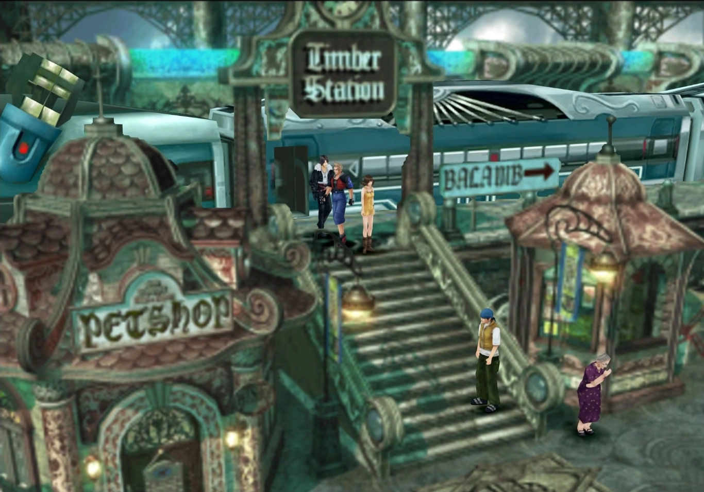
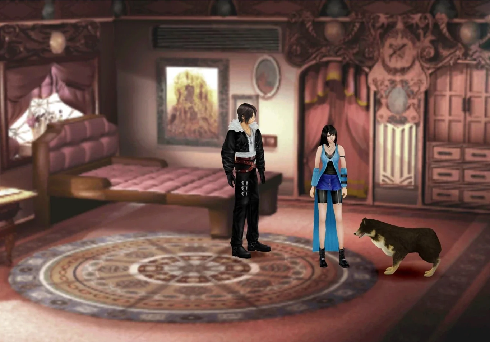
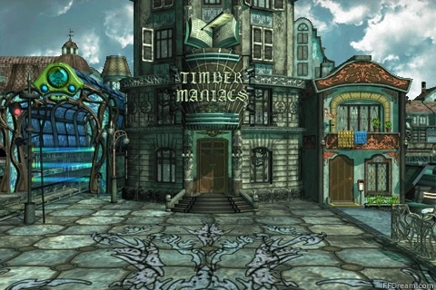
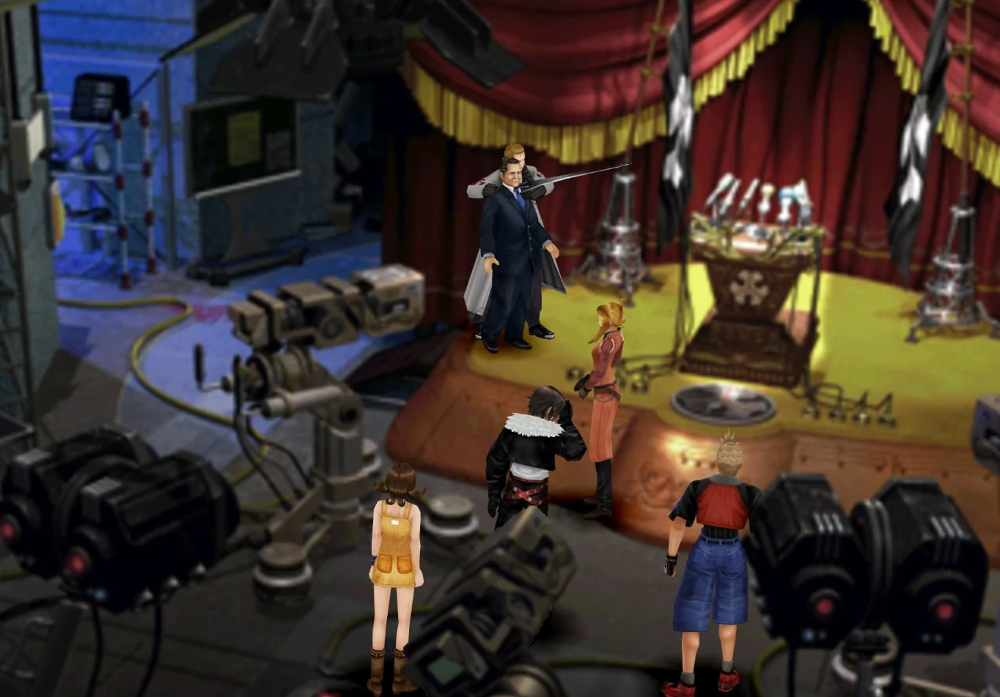
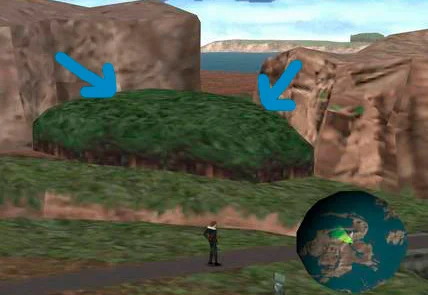

Timber
Luego de discutir por un rato el sueño que compartieron los protragonistas, saldremos del tren. Al bajar las escaleras te abordará un personaje al que debes responder "Pero todavía quedan búhos".Ve tras él y, automáticamente, subirás al tren.
Ve al fondo del tren para conocer a Rinoa, la chica con la que bailaste en el Jardin, y su perro Angelo. Te darán un tutorial sobre cómo funciona su ataque límite y cómo aprender otros nuevos para la pareja. Vuelve con tus compañeros para que los Búhos te cuenten el plan. Presta atención a las explicaciones que te dan sobre los sensores, sobre todo. Si un guardia va a usar el sensor acústico en tu posición, debes quedarte quieto. Si usa el sensor térmico, debes moverte arriba. Guarda la partida y habla con Watts para comenzar con la operación de desenganche. Si no te ha quedado claro cómo funciona la secuencia, presta atención a este vídeo.
Si fracasas, tendrás que empezar de cero o renunciar a una recompensa especial. La idea es que en la primera parte metas los 3 códigos de una vez, y en la segunda, metas dos, subas, esperes, bajes y metas 3. Si consigues hacerlo todo sin fallos, tu nivel de SeeD subirá en 1.. Avanzando luego de que el plan sea un exito, volvemos al tren, habla con Rinoa para ir a visitar al presidente cuando estes listo, como podras sospechar, no es una simple charla asi que, preparate
Jefe - Namtal-Utok
- Vida: 3050
- Vulnerable: Sacro
- Resistente: Veneno
- Recompensa: Polvo de Zombi x8
- Extraccion: Esna, Doble, Locura, Zombi
- Estrategia: La primer parte es contra la version "humana", luego aparecera su verdadera forma. Puedes enfrentarte de la manera tradicional, es un enemigo complicado, silenciara a tus personajes constantemente, les causara el estado Zombi (no se pueden curar), usando G.F y aguantando eventualmente lo mataras, sino... es un no-muerto... una Cola de fenix y ganaras instantaneamente
Una vez terminada esa secuencia, habla con Rinoa. Luego ve al menú y en Condición, selecciona a Rinoa y ve a su pantalla de Límites. Lo que vamos a hacer a continuación es un pequeño truquito: selecciona un Límite que Angelo ya conozca para que el perro de Rinoa no aprenda límites nuevos. Esto nos permitirá, mucho más adelante, usar casi siempre su límite más poderoso. Sal del menu y habla con Watts para salir a la calle.
Debemos ir a la Emisora asi que, toma el camino para donde van las vias del tren y en la siguiente pantalla ve hacia la derecha y baja las escaleras junto al banco. Derrota a los soldados. Al terminar conseguirás la "Carta del buel". Entra al bar y ve al fondo. Escoge "Dirigirle la palabra" y luego "Confesar lo de la carta". El tipo se apartará y te dará la Carta del tomberi. Avanza por el callejón y sube las escaleras para ver una secuencia. Luego sigue a tus compañeros. Ve hasta el edificio y observa los acontecimientos.
Después tendrás que volver sobre tus pasos y tomar el otro camino, al entrar en la casa y ver la secuencia, intenta abandonar la casa. Ahora tendrás que formar tu equipo antes de continuar con la historia. Una vez afuera, hay que visitar el edificio "Timber maniacs" (justo al lado de la casa) debemos entrar para conseguir la revista "Mil novias" (en el pilon de revistas apenas se entra) ahora si continuemos. Ve hacia la derecha desde la puerta del edificio Timber Maniacs para llegar a donde estaba la escalera al bar. Sigue a tus compañeros y cruza las vías del tren para subirte al mismo. Una vez a bordo, habla con todos los personajes. Cambia de vagón, vuelve a donde están Zell, Quistis y Rinoa y habla con Zell. Escoge "Paso de él" para continuar y bájate del tren en Estación Jardín este.. Una vez abajo caminar hacia norte para adentrarnos en el bosque de la imagen, justo antes de pasar el bosque, vuelven un viejo conocido... Laguna
SIGUIENTE: LAGUNA (2DO SUEÑO)
ANTERIOR: LAGUNA (1ER SUEÑO)